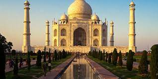

Taj Mahal
It was built by Mughal Emperor Shah Jahan in memory of his wife Mumtaz Mahal with construction starting in 1632 AD and completed in 1648 AD, with the mosque, the guest house and the main gateway on the south, the outer courtyard and its cloisters were added subsequently and completed in 1653 AD.

Golden temple
The Golden temple is famous for its full golden dome, it is one of the most sacred pilgrim spots for Sikhs. The Mandir is built on a 67-ft square of marble and is a two storied structure. Maharaja Ranjit Singh had the upper half of the building built with approximately 400 kg of gold leaf.

Mysore palace
Is 1 day enough for Mysore? If you have just one day to spend in Mysore, you can cover some of the major attractions like the Mysore Palace, Brindavan Gardens, or the Mysore Zoo. However, in order to enjoy all that this wonderful city has to offer you must spend at least 2 or 3 days here.